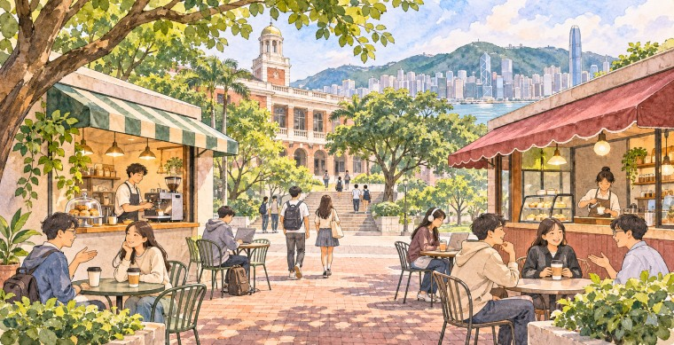

瑞幸咖啡在半年內於香港開設12間分店，其後透過應用程式推出15.90港元的首單優惠。一間競爭對手咖啡店要判斷，跟隨對方減價能否吸引顧客，還是只會壓低自己的利潤率。
你經營 East Café。West Café 已公布午市原價。你的分析員預計，這一輪午市若維持原價，East 可賺100港元；若減價5港元，則可賺130港元。請在午飯鐘響前作決定。
如果 West 的價格確實不變，你會怎樣做？你的選擇會讓你多賺多少？
West 也可以改價。現在，兩間店同時決定同一輪午市的價格。
兩人分別扮演兩間店的東主，各自作決定。在哪一組價格下，雙方都不會想單方面改價？
對手維持原價時，減價可賺130，而非100。對手減價時，減價可賺80，而非60。同樣的比較也適用於 West。唯一的納什均衡是雙方都減價，各賺80。
第0–3分鐘：投票，然後兩人一組比較各自的理由。第3–7分鐘：公布改變了的條件，再投票。第7–12分鐘：對照兩輪答案，解釋兩者如何相容。雙方都較希望各賺100，但只要對手維持原價，任何一方都可以藉減價多賺。請一組雙方都選擇維持原價的同學指出，哪種單方面改價可以多賺。再問選擇減價的組別，哪一項假設收益必須改變，才會消除這個減價誘因。